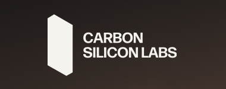
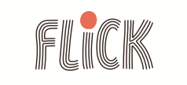
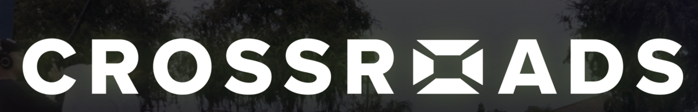

Where I've worked, studied, and built

USC MarshallMBA (STEM) '27. Dean's Scholarship, GMAT 97th percentile.

American ExpressCut 500K+ access permissions. Built an AI recommendation engine.

McKessonAutomated onboarding and infrastructure. Manual effort down 20%.

Arizona StateB.S. Computer Science, magna cum laude.

Hong Kong DisneylandFranchise growth strategy for Duffy & Friends.

Carbon Silicon LabsAI AdvisoryCarbon Silicon LabsAdvising an AI-native startup serving local businesses.

FlickCreative PartnerFlickCreative partner. Short-form video as House of Babbepalli.

Crossroads MediaProduct StrategyCrossroads MediaCommercialization strategy for an AI entertainment startup.

USC AthleticsFan engagement, sponsorship, and content strategy.

Dog Days CollectiveProduced and co-wrote Something About Him. 15 crew, $6K.

Cinelytic20+ executive interviews to pressure-test product-market fit.

Velocity RedesignCo-Founder
Velocity RedesignFirst company. Web presence for 5 local businesses.
Carbon Silicon Labs, Flick, and Crossroads use the real logo files you sent, shown full-bleed since each ships with its own background. Dog Days Collective uses the transparent PNG from their site. USC, Amex, McKesson, ASU, Disney, USC Athletics, and Cinelytic pull square site icons live from Google's public favicon service, so those need a network connection. Velocity Redesign stays typographic by your call. Drop a file into assets/logos/ to override any tile.